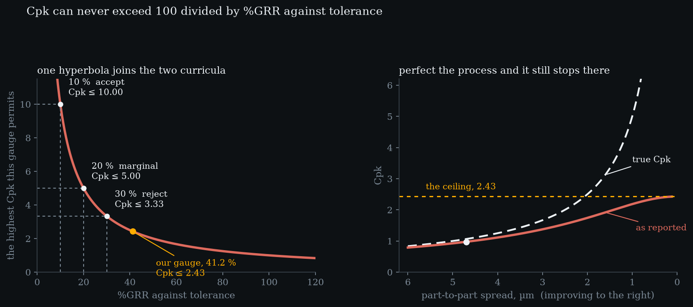
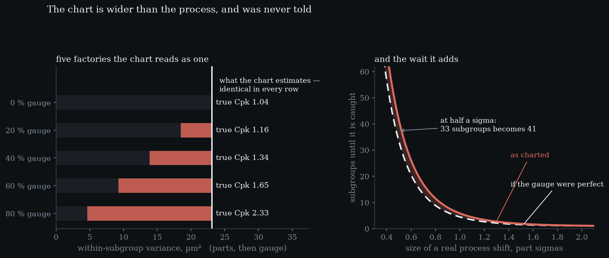

Level 7 · chapter seven
The handshake back
Six levels described a measurement system and none of them said what it is for. Handing it to the person watching the process turns out to have its own arithmetic — and one exact identity that neither this site nor its sibling has ever written down.
after Level 6 — attribute agreement·leads to nothing — this is where the curriculum ends
- 7.1The chart already contains the gaugelimits 9.18 % wider than the process, and nothing says so
- 7.2And pays for it in waitinga one-sigma shift takes 30 % longer to find
- 7.3Then the two curricula turn out to be one — an identity, not a guideline
- 7.4What the chart cannot take back outfive factories, one number, true Cpk from 1.04 to 2.33
- 7.5What each side owes the othera stable gauge, and a study shaped like the chart
The chart already contains the gauge
Six levels have described a measurement system. Not one of them said what it is for. A gauge exists because somebody is watching a process, and everything computed so far has to be handed to that person in a form they can use.
Start with what they are looking at. subgroups of 5the limits the process earned±6.3057 µmthe limits the chart draws±6.8843 µminflation1.0918wider by9.18 %Subgroup means, and limits set three standard errors either side. Those limits are computed from readings, and Level 1 settled what a reading is: the part plus the gauge, with the variances adding. So the limits are wider than the process earned by exactly 1.0918 — 9.18 % on this gauge.
Half a micron, which is why nobody has noticed. not a mistake anybody madeThere is no other way to do it. You cannot chart parts you cannot measure.The subgroup size does not help: it divides the true standard error and the observed one equally, so the widening is the same at any n. Every chart in every plant is drawn around a spread that includes its own instrument, and nothing on the chart says so.
And pays for it in waiting
A wider limit is a later signal, and that is the first real cost of measurement error to somebody who is not doing a gauge study.
A real shift moves the readings by the same physical amount whatever the gauge is doing, but it is judged against the inflated spread — so the signal is smaller in the only units the chart has. subgroups until it is caughta 0.5σ shift33.40 → 41.48 subgroupsa 1.0σ shift4.50 → 5.86 subgroupsa 1.5σ shift1.57 → 1.89 subgroupsa 2.0σ shift1.08 → 1.16 subgroupsAt one part-sigma the wait grows from 4.50 subgroups to 5.86, 30 % longer. At half a sigma it is 33 against 41 — 8 subgroups of product made while nobody knew.
A three-sigma shift is caught immediately either way, and a very small one is missed either way. the false alarm rate does not moveBoth sides are standardised against their own spread, so an unchanged process signals just as rarely. Only real shifts get harder to see.The bill lands in between, which is exactly the range a chart is run to cover.
Then the two curricula turn out to be one
Level 4 defined a percentage: six gauge standard deviations against the tolerance. Turn it upside down.
Nothing has been assumed and nothing estimated. an identity, not an approximationT / 6σ_gauge2.428215100 / %GRR_tol2.428215identicalyes%GRR of tolerance41.1825 %A capability index is half a tolerance over three standard deviations; put the gauge’s standard deviation there, which is what remains when the process is perfect, and the result is the reciprocal of the percentage Level 4 already computed. %GRR against tolerance is a capability ceiling, written as a percentage.
Which restates every published gauge gate as something the quality manual never puts beside it.the gates, restated%GRR_tol 10 %Cpk can never exceed 10.000%GRR_tol 20 %Cpk can never exceed 5.000%GRR_tol 30 %Cpk can never exceed 3.333

On the gauge these six levels built — 41.2 % of tolerance, which Level 4 already called a reject — the ceiling is 2.43. and it bites harder than the ceiling suggestsReported capability here is 0.9744 against a true 1.0638. The gauge alone moves this process across one.This plant cannot report a capability above that with a better process, with more parts, or with a longer study. Only by changing the instrument.
Read backwards it is sharper still. the useful questionNot 'is the gauge acceptable' but 'what is the most this measurement system will ever let us claim'. The identity answers it in one division.A promise of Cpk 1.33 is a promise that the whole observed spread fits inside 3.759 µm — and the parts alone are 4.7. On this process that target is unreachable with a perfect gauge, which is a different conversation from buying a better one.
- the ceiling, Cpk
- —
- Cpk as reported
- —
- Cpk if the gauge were perfect
- —
- %GRR of tolerance
- —
The three grey crosses are AIAG’s gates — 10 % accept, 20 % marginal, 30 % reject — each with the capability it permits on the left. The dashed line is the highest capability this gauge can ever demonstrate, and it depends on nothing but the gauge. Perfect the process — drag the part spread to its floor — and the reported figure rises to that line and stops. Then improve the gauge and the whole ceiling moves. The two curricula are joined here, and the join is an identity rather than a guideline.
What the chart cannot take back out
One thing remains impossible from the chart’s side. The spread it estimates inside a subgroup is the sum of two things: parts differing from each other, and the gauge failing to repeat.
On our numbers that estimate is 4.8052 µm, of which 4.33 % of the variance is repeatability. all read as 4.8052 µm0 % gaugeparts 4.805, gauge 0.000 → true Cpk 1.0420 % gaugeparts 4.298, gauge 2.149 → true Cpk 1.1640 % gaugeparts 3.722, gauge 3.039 → true Cpk 1.3460 % gaugeparts 3.039, gauge 3.722 → true Cpk 1.6580 % gaugeparts 2.149, gauge 4.298 → true Cpk 2.33But the share is not the point — the point is that it cannot be recovered. Every split below produces the identical number on the chart, while the real capability underneath ranges over more than a factor of two.

A capable process with a poor gauge and a poor process with a perfect one look identical from there. which way round it goesHolding the chart’s number fixed, a larger gauge share means the real parts are tighter than they look. The pessimistic reading is not the safe one.No amount of charting separates them, because charting never posed the question. That is the structural reason a gauge study is a separate study, and the reason this site exists beside the other one rather than inside it.
What each side owes the other
So the handover has terms, and both sides have obligations that are usually left unstated.
The chart is entitled to assume a stable gauge, and Level 5 showed that assumption is not free. a gauge problem, wearing a process costumedrift per subgroup0.18 µmtotal after 25 subgroups4.32 µmpoints outside the limits0first run of sevensubgroup 7A gauge drifting 0.18 µm per subgroup never leaves the limits across 25 subgroups — it reaches 4.32 µm against limits at ±6.88 — but it puts a run of seven on one side of centre by subgroup 7, and that will be investigated as a process change. Somebody will adjust a machine that was fine.
And the study owes the chart its own structure. match the structureIf the chart reads one part once, the study must report the gauge for one reading.Level 1 showed averaging divides the gauge term by the root of the count and never touches the parts — so a study reporting the gauge as a mean of 3 readings has described an instrument nobody is using. It calls the gauge 1.1888 µm where the chart uses 2.0591, and the limits come out 5.84 % wider than the study predicted.
Seven levels. what was never assertedEvery number on these seven pages was computed when the page was built, by the same library the tests read. None of it was typed in.A gauge is a process and it has variation. Two questions hiding inside one word. The term average-and-range has no room for. A percentage, and what it is a percentage of. Precision is not accuracy. The gauge that says pass. And this — the handshake back, which turned out to be an identity.
The chart that consumes all of this is on the other site. Its Level 8 is capability, and it computes a Cpk without once asking what measured it — which is the gap equation (7.1) closes. SPC from first principles starts where this ends.